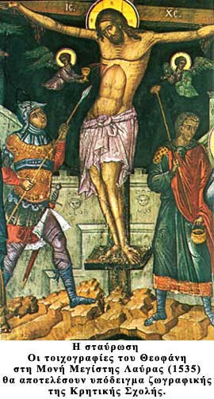

|

Μετά την ¶λωση της Κωνσταντινούπολης από τους Οθωμανούς Τούρκους την βυζαντινή παράδοση στην αγιογραφία συνεχίζει η Κρητική Σχολή με σημαντικότερο κέντρο της το Χάνδακα (Ηράκλειο). Ονομάστηκε Κρητική από τον τόπο της οριστικής της διαμόρφωσης, στο δεύτερο μισό του 15ου αι. ως τις αρχές του 16ου, αλλά και γιατί οι κυριότεροι εκπρόσωποι της κατάγονται από την Κρήτη.
Η εκτεταμένη από γεωγραφική, θρησκευτική και εθνική άποψη πελατεία (καθολικοί Βενετοί και Δαλματοί, Επτανήσιοι ορθόδοξοι Έλληνες, ορθόδοξοι τουρκοκρατούμενων περιοχών, μοναστήρια) στρέφει τους Κρητικούς ζωγράφους κυρίως στην τεχνική των φορητών εικόνων, όπου με ιδιαίτερη δεξιοτεχνία προσαρμόζουν τη βυζαντινή παράδοση στη δυτική τεχνοτροπία.
Η Κρητική Σχολή χαρακτηρίζεται τόσο από τις συγκρατημένες χειρονομίες όσο και από τη λεπτότητα, τη διαύγεια και την ευγένεια των προσώπων και των στάσεων. Τα χρώματα διακρίνονται για τους βαθιούς τόνους τους, ενώ το κυριότερο γνώρισμα της Σχολής είναι η χρήση εντονότατων φωτοσκιάσεων και η επιδίωξη της εντύπωσης ανάγλυφου. Τα γυμνά μέλη του σώματος υποδηλώνονται με στενές λωρίδες φωτός σε αντίθεση με το σκούρο των ενδυμάτων και του φόντου, ενώ οι ακμές, όπως και τα προεξέχοντα μέρη των όγκων, τονίζονται με λευκές λεπτές γραμμές.
Στη διαμόρφωση των χαρακτηριστικών στοιχείων της Κρητικής Σχολής καθοριστική θεωρείται η συμβολή των ζωγράφων Θεοφάνη Στρελίτζα (γνωστός ως Θεοφάνης ο Κρης) και Μιχαήλ Δαμασκηνού. Με την κατάληψη της Κρήτης από τους Τούρκους (1669) η Κρητική Σχολή παρήκμασε.
|
|